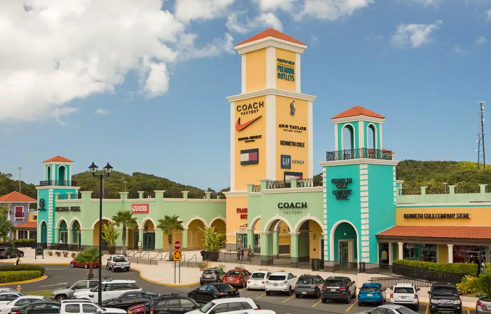
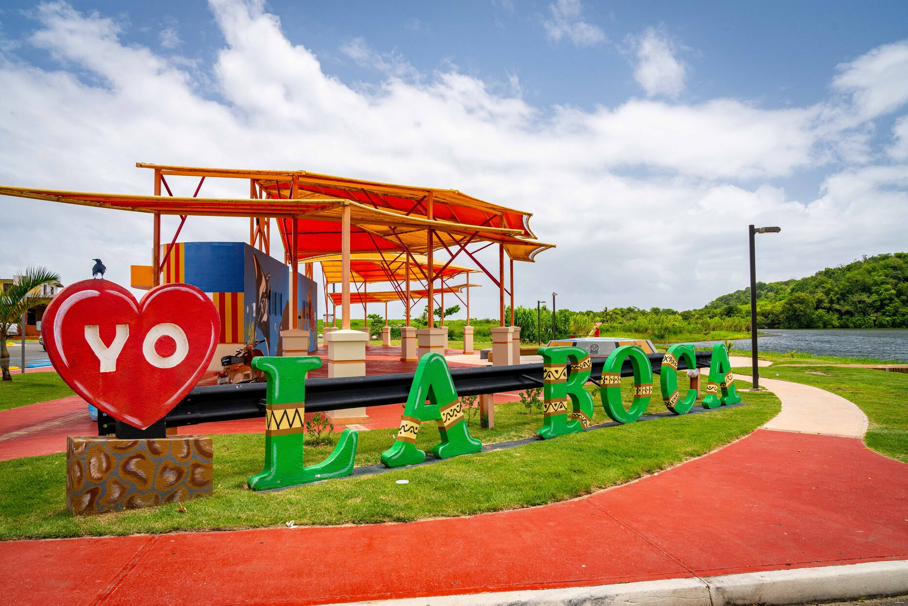
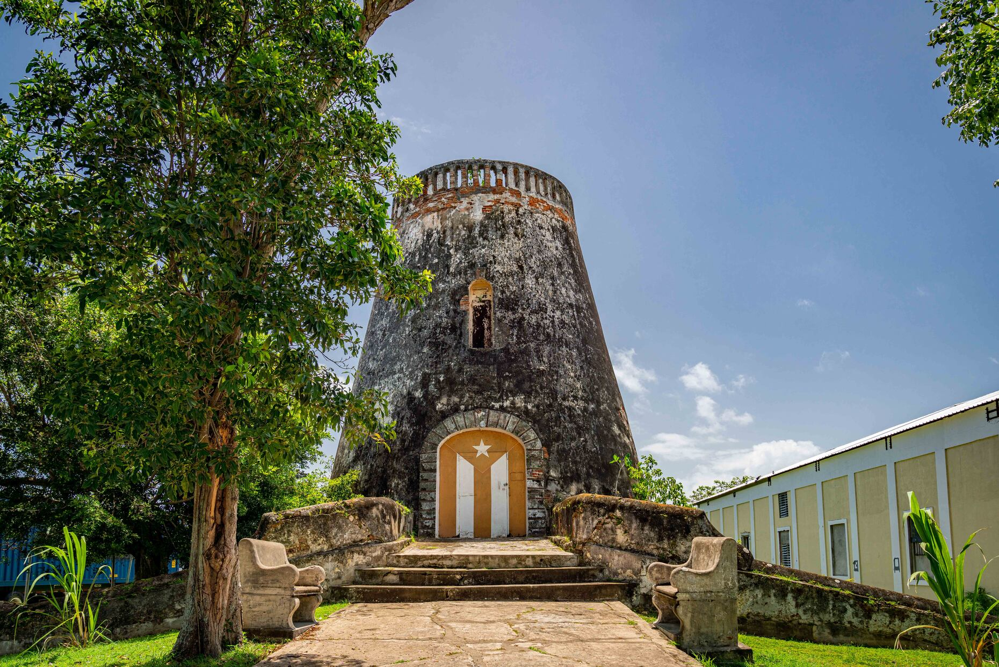
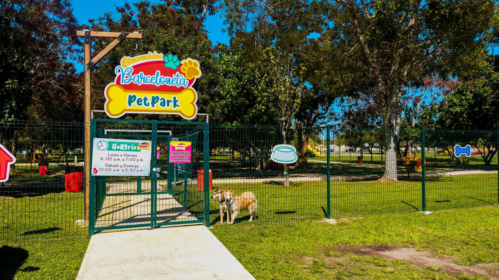
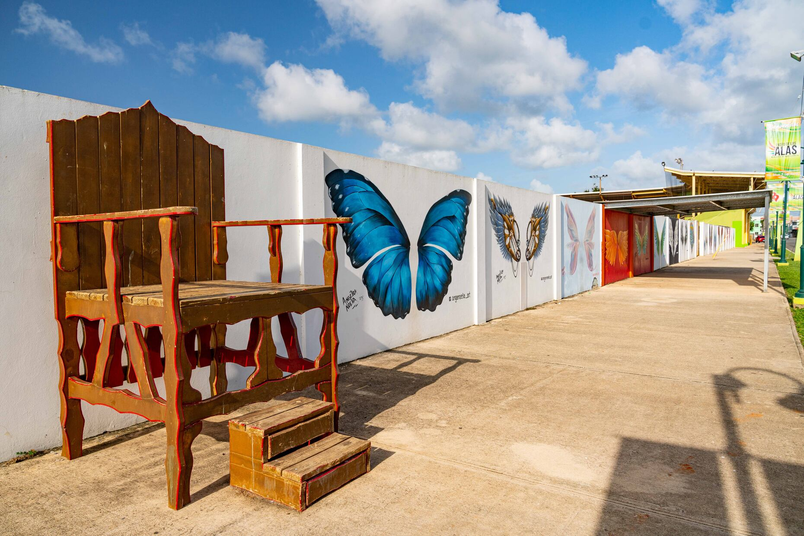
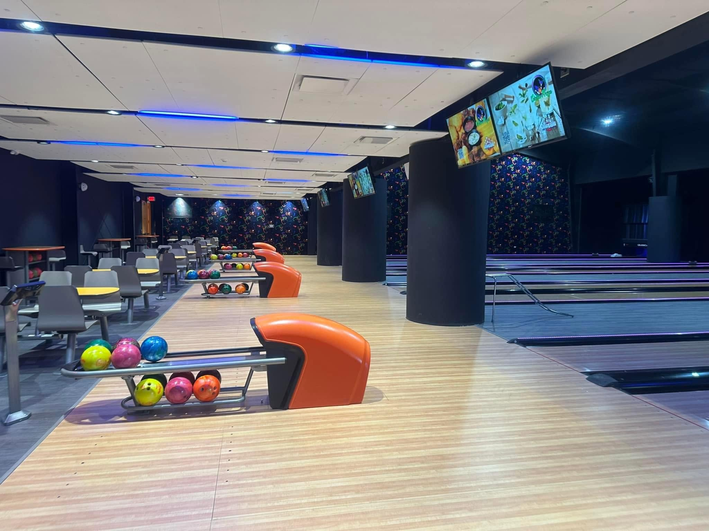
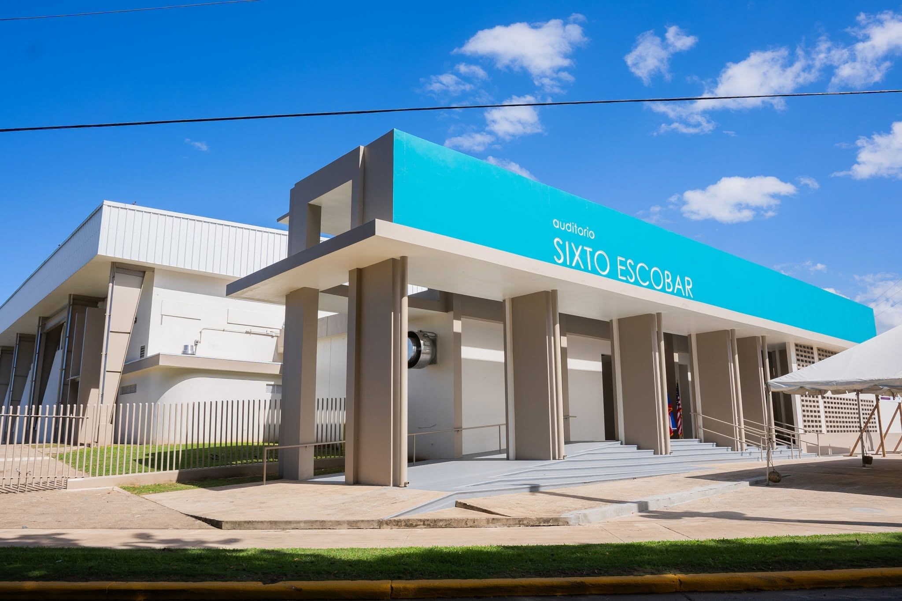
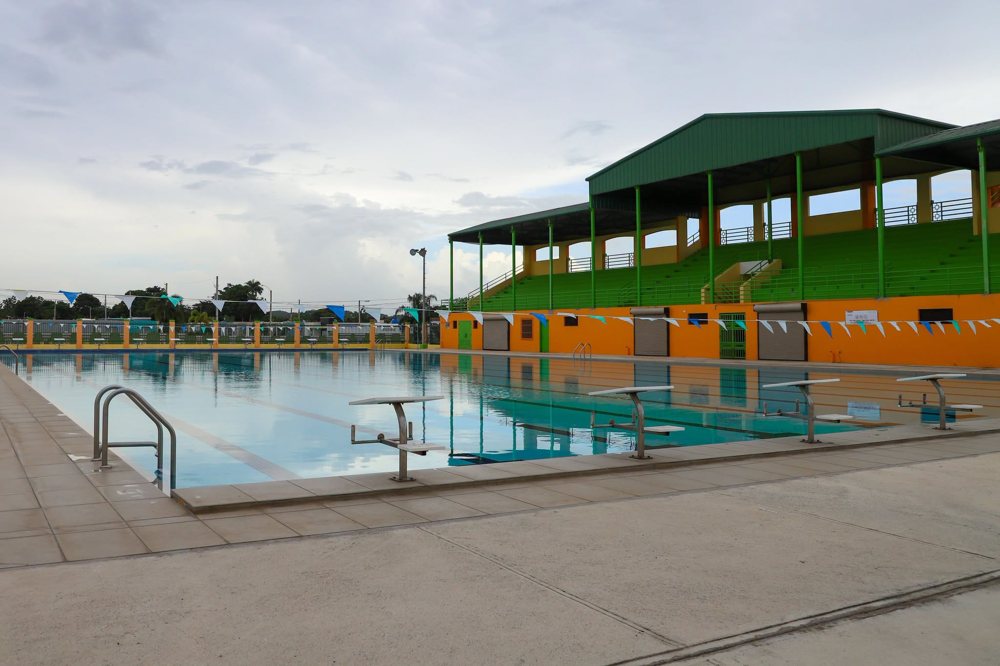

Mall outlet al aire libre, que cuenta con una impresionante colección de tiendas de diseñador y marcas reconocidas que ofrecen ahorros diarios sobre precios de outlet.

Un rincón junto al mar ideal para disfrutar de la brisa y contemplar el paisaje.

La Antigua Central Plazuela (también conocida como las Ruinas de la Central Plazuela) es un histórico complejo industrial azucarero ubicado en la carretera PR-681 en Barceloneta, Puerto Rico, que funcionó como el principal motor económico del municipio desde mediados del siglo XIX hasta su cierre en 1963. Hoy en día, sus imponentes ruinas de ladrillo y hormigón —junto a un raro molino de viento centenario— se conservan como un sitio histórico, mirador y espacio recreativo familiar frente al Paseo de las Mariposas.

El Barceloneta Pet Park (también llamado Parque de Perros de Barceloneta) es un parque recreativo municipal gratuito y completamente cercado, diseñado para que los perros corran sin correa, socialicen y se ejerciten de forma segura. Ubicado en la carretera PR-681 Km 21.6 (dentro del Complejo Recreativo Deportivo Villa Georgetti), cuenta con obstáculos de agilidad, zonas con sombra y áreas de juego para toda la familia.

El Paseo de las Alas es una galería de arte urbano al aire libre en Barceloneta, Puerto Rico, compuesta por más de 20 murales interactivos de alas pintados en los muros exteriores del Estadio Municipal José I. Machado. Es una parada gratuita y muy popular para tomarse fotografías posando frente a distintos diseños.

El Barceloneta Bowling Center (también conocida como la Bolera Municipal de Barceloneta) es una bolera moderna y centro de entretenimiento familiar operado por el municipio en el centro del pueblo. Inaugurada en marzo de 2023, cuenta con 10 pistas de bolos, área de videojuegos (arcade), concesionario de comida y un ambiente nocturno con luces y música estilo discoteca.

Honra al primer campeón mundial de boxeo puertorriqueño. Se celebran diversos eventos y hogar de los industriales de Barceloneta en la Liga Puertorriqueńa de baloncesto.

El Natatorio de Barceloneta José Antonio Pagán es una instalación acuática municipal ubicada en la Avenida Escobar, diseñada para la recreación comunitaria, el entrenamiento deportivo y las competencias de natación. Cuenta con piscinas al aire libre y áreas de descanso donde se ofrecen clases de natación, rutinas de ejercicio como aquazumba y horarios abiertos para el público general.